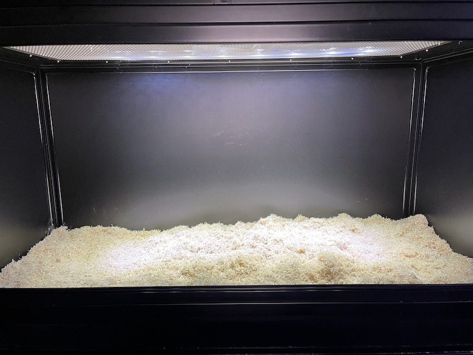
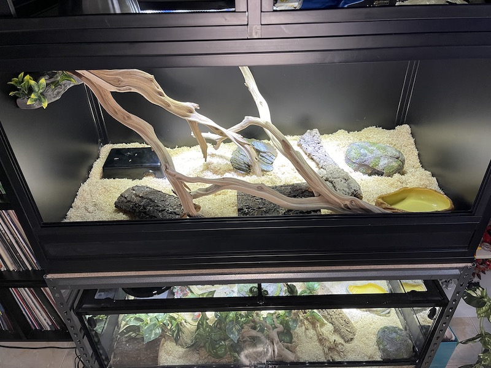
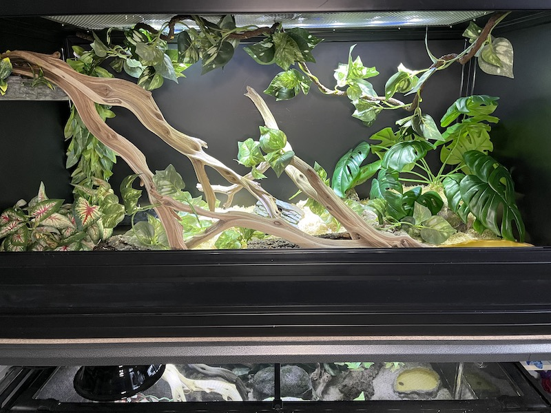

Substrate, to put simply, is whatever is on the floor of your enclosure, it could be something as simple as paper towel, all the way to a living, bioactive soil. I personally take the middle ground and use a wood chip substate. There are many different kinds to use:
You can even mix most substrates together, it really depends on a mix of personal preference but also the owner’s climate. Every substrate has it’s own pros and cons. I personally use Aspen, and while some may say that Aspen looks too artificial, I like the way it looks. And since I live in Florida, where it’s frequently very humid, it’s good for the snakes.

In terms of distribution some people, especially when going for a natural set up, will slope the substrate towards the back to draw the eye naturally through the scape. I, however, go the more functional route and slope the substrate from left to right, lower the left. The reason being the heat mat is located on the left. So if the snake wants to burrow down to the bottom to get to heat, which they often do, they don’t have very far to go.
Decorations

This is where the creativity can really get started. The possibilities are endless, too many to really list all of them so I will just discuss what I have here to use today.
I have a cave for the warm side, open bottom (so they have access to that belly heat). I also have a more secure, enclosed rock cave. There’s also cork rounds cut in half for extra hiding spaces. There is a very known saying that you can never have too much cover in a snake’s enclosure!
Climbing opportunities are a bit controversial in the reptile hobby, some say to always include something to climb on, while the opposers say it isn’t necessary. I always include branches because even if they never use it, it will always make a cage look better. So as you can see I have included a magnetic ledge, and some branches.
Lastly but not least is the water bowl, which is very self explanatory. Some will include bowls large enough for their snakes to soak, but mine have never exhibited that behavior and I find that it just takes up too much floor space.
Plants

Plants, whether fake or real, can really make or break a set up. That is, if your goal is to make it look nice. I choose to go with fake plants as not only is easier to maintain and keep clean, the snakes would uproot live plants anyway.
Much like the other decor the possibilities are endless, but as you see here, I have some plants buried in the substrate, some mounted to the walls, and some even hanging from the ceiling.
And there you have it there is the completed enclosure. Hope you have fun reading this tutorial.